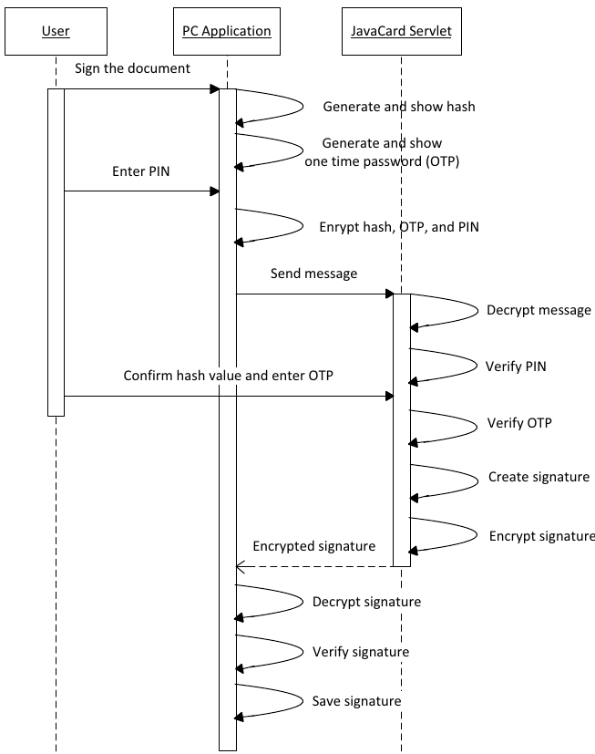
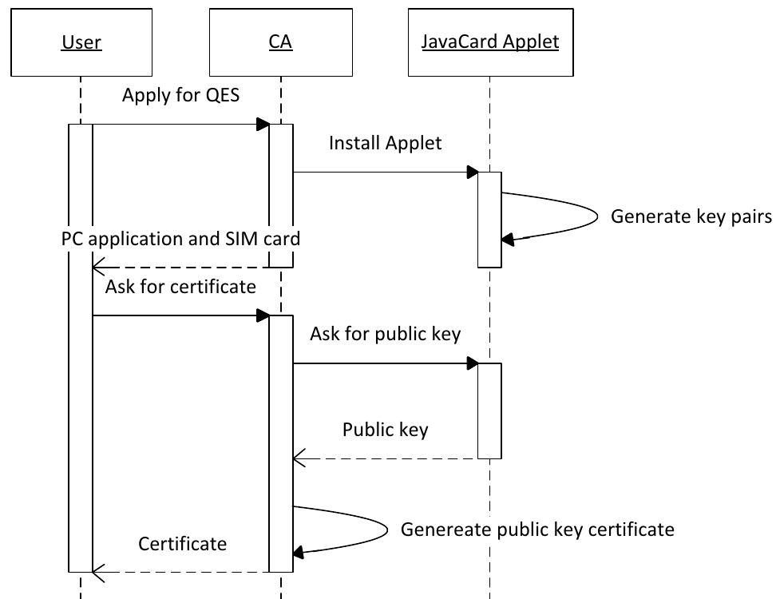

SMOS
Java Card 3.0 Connected Edition
Farid Meziane
Alan Camilo Herrera

Plan
- Introduction
- Nouveautés Java Card 3
- Cas d'usages
- Applications
- Conclusion
Introduction
 Figure : l'évolution de Java Card
Figure : l'évolution de Java Card
Java Card Classic Edition
- Repose sur une évolution de java card 2.2.2 avec quelques améliorations
- Facilité de développement
Java Card Connected Edition
- Les Servlets
- Prise en charge des fichiers .class
- Automatic Garbage Collector
- Multitaches
- Vérification de bytecode obligatoire
- Data types : Char, Long and String
 Schéma de l'architecture Java Card
Schéma de l'architecture Java Card
 Schéma de la pile protocolaire
Schéma de la pile protocolaire
Avantages
- Expérience utilisateur continue et équivalente à une application web
- Administration à distance des applications
- Interfaces standardisés pour tous les lecteurs possédant un navigateur internet
- Respect de normes de sécurité
- Sécurisation d'application IOT, desktop, mobile
Cas d'usages
- Qualified Electronic Signature sur Smartphone, indépendant de l'opérateur et de l'OS
- Application de chiffrement/déchiffrement de fichiers stockés sur un serveur distant
 Architecture générale
Architecture générale
Premiere application

Diagramme de séquence création d'une signature
- Chiffrement RSA 2048-bit
- Clé privé stockée sur la carte SIM
- Clé publique obtenue via la Certification Authority (CA)

- Pas de communication avec l'OS du Smartphone ou ses applications -> moins de failles de sécurité
- Simplicité de l'application
- Respecte le standard Common Criteria EAL 4 level
- Respecte la directive européenne 1999/93/E sur les signatures électroniques
Deuxiéme application : Disque Virtuel
 Figure : Architecture de l'application Disque Virtuel
Figure : Architecture de l'application Disque Virtuel
MERCI POUR VOTRE ATTENTION